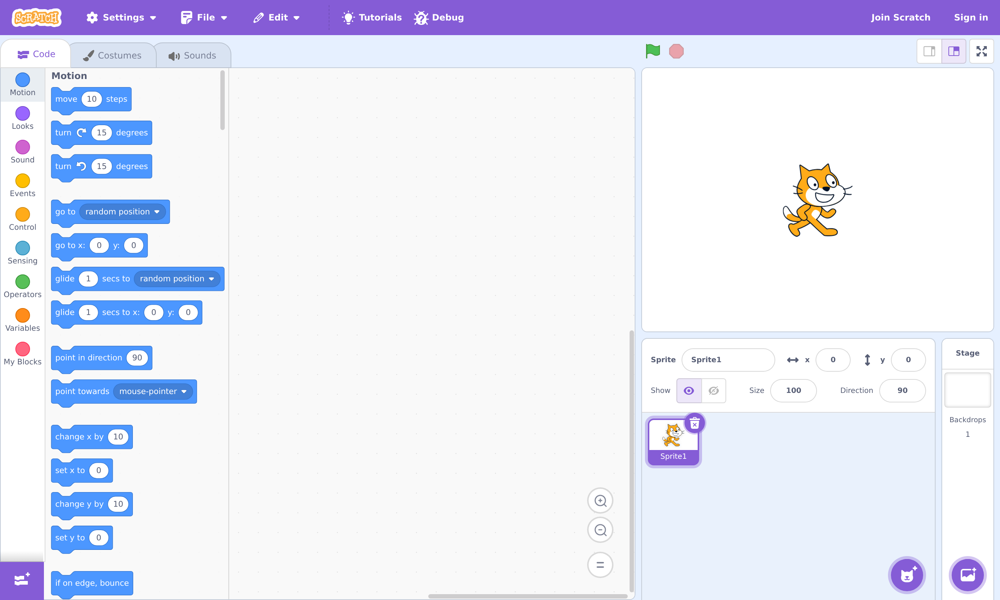
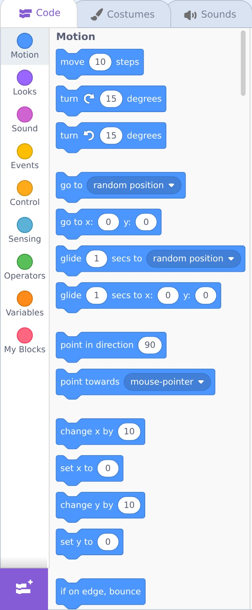
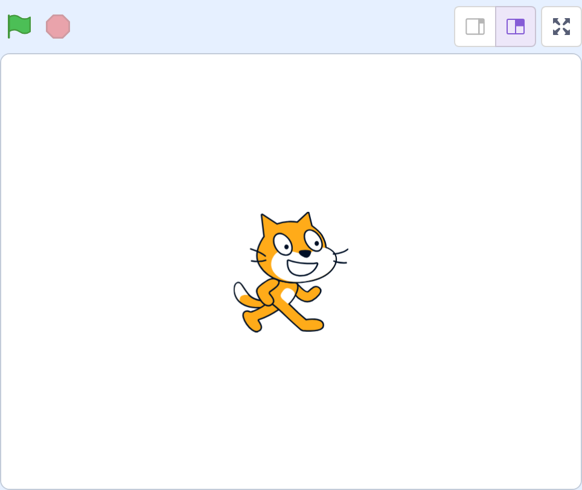
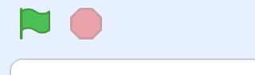
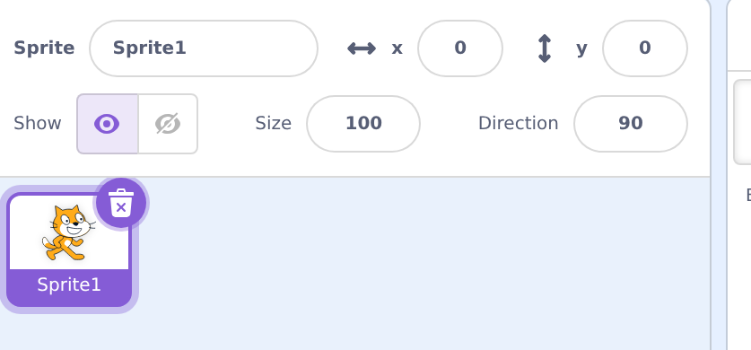

🧭 Lesson 1.2: A Guided Tour of the Scratch Editor
Open Scratch and let's walk through every panel together. By the end, nothing on the screen will feel mysterious — and you'll know exactly what to point at when your child asks "what's that?"
🎯 Learning Objectives
By the end of this lesson, you will be able to:
- Open the Scratch editor (with or without an account)
- Name the four main areas of the editor and what each does
- Find any block using the colored category menu
- Use the green flag and stop button
- Save your work and set up a safe kid account
Estimated Time: 30 minutes • Best done: at a computer, following along
In This Lesson
🎓 Learn It: Opening the editor
Go to scratch.mit.edu and click “Create” at the top-left (or the big “Start Creating” button). That's it — the editor opens with the friendly orange cat waiting for you. You don't need an account to start playing.
✅ Account or no account?
Without an account: you can build and test anything, but your project won't save automatically. Great for a first look.
With a free account: projects save to the cloud and can be shared. We'll set one up safely at the end of this lesson.
🎓 Learn It: The four areas (your map)
The editor looks busy at first, but it's really just four zones. Learn these and you've learned the editor.

pick instructions"] --> C["2 · Code Area
snap them together"] C --> S["3 · Stage
watch it happen"] S --> L["4 · Sprite List
choose who you're coding"] L --> P style P fill:#4C97FF,color:#fff,stroke:#333 style C fill:#e2e8f0,color:#1e293b,stroke:#333 style S fill:#59C059,color:#fff,stroke:#333 style L fill:#9966FF,color:#fff,stroke:#333
| # | Zone | Where | What it's for |
|---|---|---|---|
| 1 | Blocks Palette | Left | The menu of instructions, sorted by color/category |
| 2 | Code Area | Middle | The workspace where you drag & snap blocks together |
| 3 | Stage | Upper right | The "screen" where your sprites act out your code |
| 4 | Sprite List | Lower right | All your characters/objects; click one to code it |
🎓 Learn It: The Blocks Palette
The left strip is where every instruction lives. Down the far-left edge is the category menu — a column of colored dots. Click a dot (or scroll) and the palette jumps to that category's blocks.

Here's what each category is for. You don't need to memorize this — just know the color story:
- Motion — move, turn, glide
- Looks — say, show, costumes, size
- Sound — play sounds
- Events — "when… " starters
- Control — wait, repeat, if/then
- Sensing — touching, keys, mouse
- Operators — math & text
- Variables — store scores & values
⭐ Most-used starter: the gold Events category holds “when 🟩 clicked” — the block that kicks almost every program off. You'll use it constantly.
🎓 Learn It: The Stage & the green flag
The Stage (upper right) is your movie screen. Whatever your code does, you'll see it here. By default it holds one sprite: the Scratch cat.

Just above the stage sit the two most important buttons in all of Scratch:

🟩 The Green Flag
Click it to run your project. Any script that starts with “when 🟩 clicked” springs to life.
🛑 The Red Stop
Click it to stop everything immediately. Your child will use this a lot — that's healthy experimenting.
You can also make the stage bigger: the icons at the top-right of the stage switch between small, large, and full-screen "presentation" mode — perfect for showing off a finished project.
🎓 Learn It: Sprites & the sprite list
A sprite is any character or object you can code — the cat, a ball, a dragon, a button. Below the stage is the sprite list, showing every sprite in your project. Click a sprite to select it; the code area then shows that sprite's blocks. This is the #1 thing beginners forget.

⚠️ The classic "why isn't my code working?"
Nine times out of ten, the code was added to the wrong sprite. If a block does nothing, first check: is the right sprite selected (highlighted) in the sprite list?
To add more characters, use the round cat "+" button at the bottom-right of the sprite list — it opens a library full of ready-made sprites. The Stage panel to its right lets you change the background (called a backdrop).
🎓 Learn It: Costumes, Sounds & saving
At the very top-left are three tabs: Code, Costumes, and Sounds.
- Code — where you've been (blocks). This is home base.
- Costumes — a sprite's different "outfits" or frames. Switching costumes is how animation works (the cat has two walking costumes).
- Sounds — record or pick sounds for a sprite to play.
💾 Saving your work
Signed in? Use File → Save now. Scratch also autosaves periodically.
Not signed in? Use File → Save to your computer to download a .sb3 file you can reload later with File → Load from your computer.
👪 Setting up a safe kid account
Click “Join Scratch” and follow the steps. Scratch asks for a birth month/year and, importantly, a parent or guardian's email address — that's you. Use a username that doesn't reveal your child's real name, and keep the password somewhere you both can find it. We'll cover community and sharing safety in depth in Module 4.
💬 Teach It: Give your child the tour
Resist the urge to deliver a lecture. Kids learn this interface fastest by clicking everything. Your job is to give them a tiny map, then let them explore.
The 60-second tour to give them
"See these four parts? Over here (left) are the blocks — that's your toy box. In the middle is where you build. Up here (stage) is where the cat does what you say. And this green flag makes it GO. Want to press it?"
A great first exploration game
- Ask them to find every color of block by clicking the colored dots. "How many colors can you find?"
- Have them drag any one block into the middle and click it once to see what it does.
- Let them press the green flag and the red stop a few times. Demystify the two big buttons.
👧 Ages 5–7
Point to zones using nicknames: "toy box," "stage," "GO button." Skip the vocabulary. Click things for them if the mouse is tricky.
🧒 Ages 8–11
Let them run the tour back to you: "Can you teach me the four parts?" Teaching it cements it.
🧑 Ages 12+
Point out the Costumes/Sounds tabs and the sprite library, then step back. They'll happily rabbit-hole.
🖐️ Hands in your lap
The hardest parenting skill in coding: don't grab the mouse. Point with your finger, ask questions, but let them do the clicking. Their hands, their learning.
🎯 Quick Check
Question 1: Your child dragged in some blocks but nothing happens when they run it. What's the most likely cause?
Question 2: Which button runs the project?
Question 3: In the editor, what does a block's category color help you do?
Summary & What's Next
🎉 Key Takeaways
- The editor is just four zones: palette, code area, stage, and sprite list.
- The colored category menu helps you find any block; gold Events holds the “when 🟩 clicked” starter.
- Green flag runs, red stop halts. Code always belongs to the selected sprite.
- Save via the File menu; kid accounts use a parent's email and a name that hides their identity.
🚀 Next up
Enough looking — time to build! In Lesson 1.3 you'll create your first real project: making the cat move and talk when you click the green flag. This is the "whoa, I did that!" moment.
The map is in your head now. 🗺️
You could sit down at Scratch right now and not feel lost. That's a big deal.